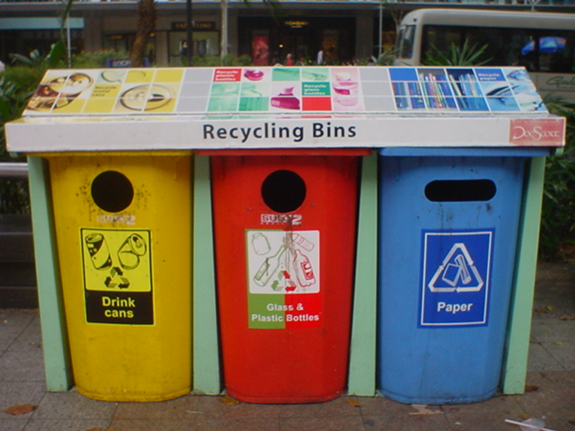

Eine sehr einzigartige Idee für die Nachhaltigkeit hatte die Stadtführung von Singapur mit der
Einführung von Recycling von Abwasser (Toilettenwasser).
Bis 2030 sollen in Singapur eine Millionen Bäume gepflanzt werden und zusätzlich zu der bereits
vorhandenen Grünfläche 50% mehr Grünfläche entstehen
besteht aus Grünfläche. 700 km²
1,3 Mio Bäume säumen die Straßen Singapurs.
Dächer und Fassaden sind begrünt.
70.000 m²